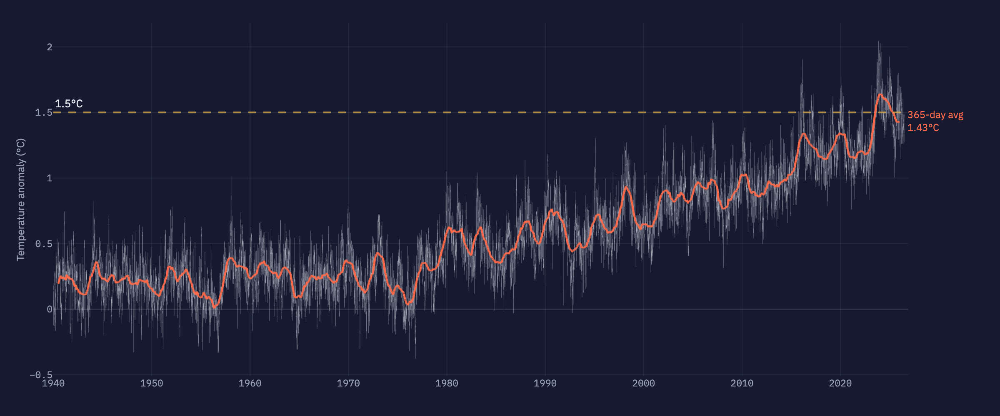
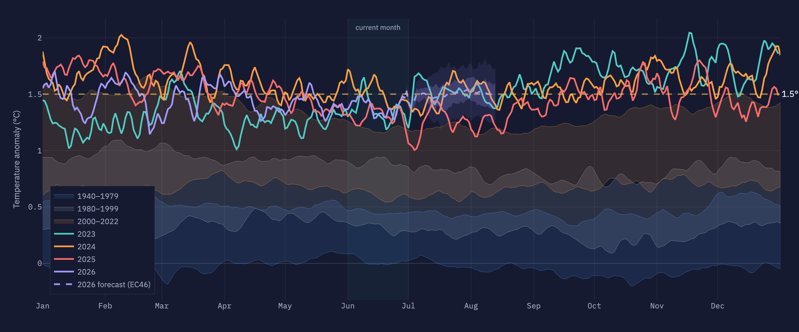
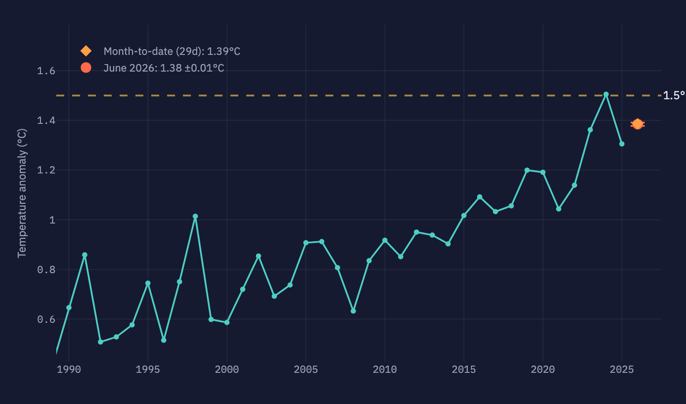
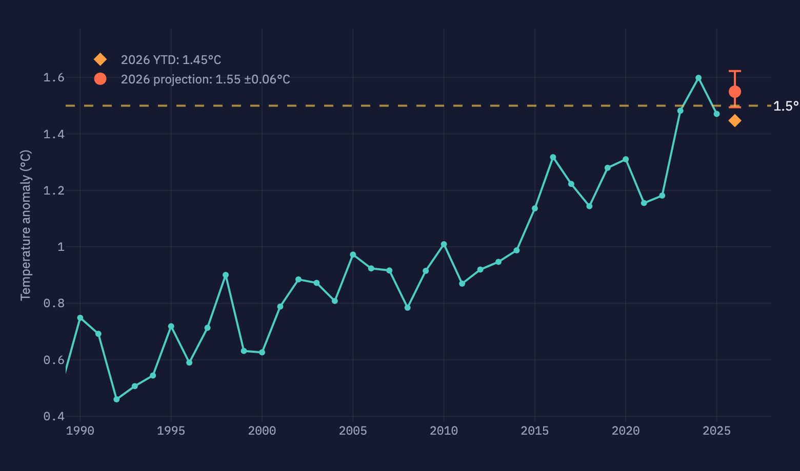
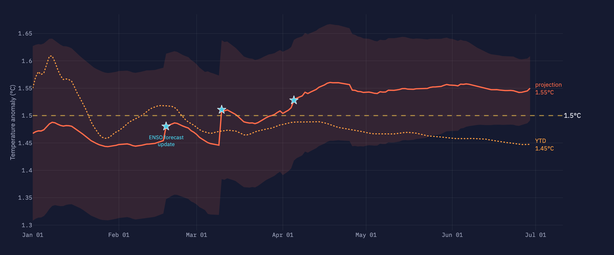
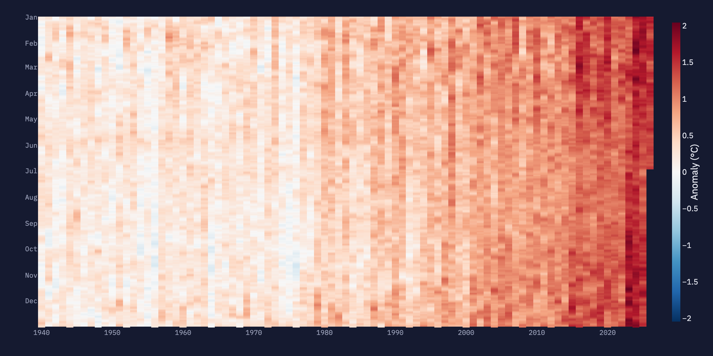
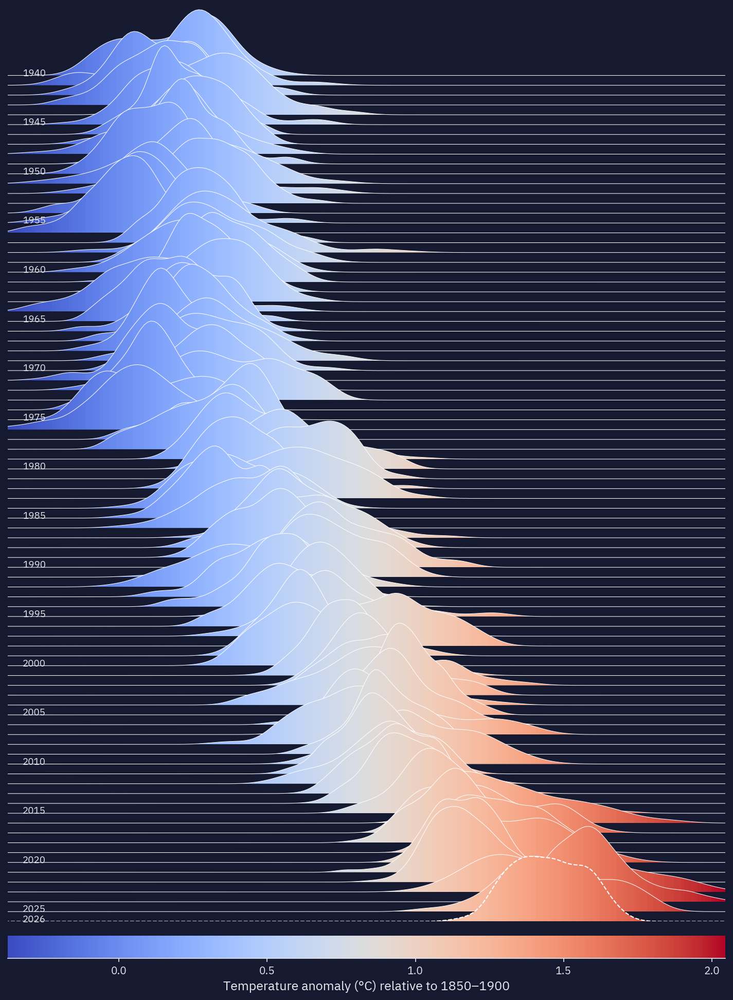

This year is on track for 1.54 °C ±0.06 above preindustrial.
Year-to-date: 1.46 °C. The projection combines the observed year so far with the ENSO multi-model ensemble, updated every morning from ERA5. The 1.5 °C line is now the coin-flip, not the ceiling.
Right now
ERA5 daily · 1940–presentDaily global mean surface temperature against every year in the record. Recent years ride well above the historical envelope; the 365-day running mean is the cleanest single measure of where we stand.
Global mean anomaly vs preindustrial (1850–1900)
Daily
The year in context — daily anomalies by year
Daily
Where 2026 is heading
Monte Carlo · refreshed dailyStatistical projections built from year-to-date observations, the seasonal cycle, and the ENSO forecast ensemble. Uncertainty narrows as the year fills in.
June 2026 — monthly projection

Annual anomaly & 2026 prediction

How the 2026 projection has evolved
Daily
The long view
1940–2026Eighty-six years of daily data in two frames: every day as a pixel, and every year as a distribution sliding warm.
Every day since 1940

The distribution slides warm
